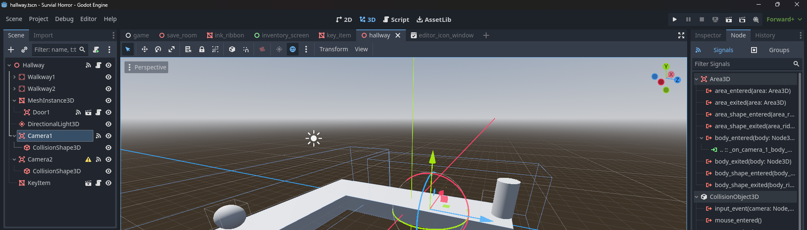
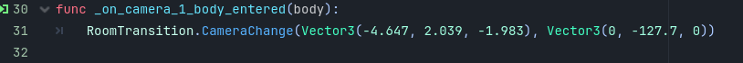

Survival Horror Prototype
I have made a prototype in Godot using GDScript and its node based structure to try and see how I can replicate classic resident evil like gameplay.

Fixed Camera Angles
Something unique of this prototype is fixed camera angles which was really easy to accomplish
There are areas throughout rooms that detect if the player enters them
Upon entering them, the game is told to change the camera angle by giving the camera new coordinates and a rotation through a global script and it's function
A lot of principles and code I used here was brought over to Blackout. A better explanation for item display methods and room transitions are saved for there: Blackout
Here is a video demonstration of the prototype in action: Link